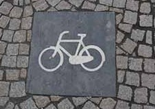

Ideeenforum

Parkeerplekken
Een van onze ideëen is om speciale parkeerplekken te maken voor de witte fietsen. Deze worden dan aangegeven door middel van een tegel op de grond. Dit voorkomt dat de fietsen op onhandige of onbereikbare plekken terechtkomen.

OV-fiets

Inspiratie halen uit de OV-fiets. Door een kleine betaling er aan te verbinden zorg je ervoor dat de fietsen minder kwijtraken en eventuele dieven getraceerd kunnen worden.
Fietsboot
Wij zouden graag een boot door de Amsterdamse kanalen laten varen. Hiermee kunnen we de boten langs de parkeerpunten laten gaan om ze eventueel te repareren.
Ideeen of suggesties?
Heb jij zelf nog andere ideëen of suggesties om dit plan tot een succes te maken? Praat mee op het forum en misschien komt jouw idee wel op onze site te staan!
Ga naar het forum